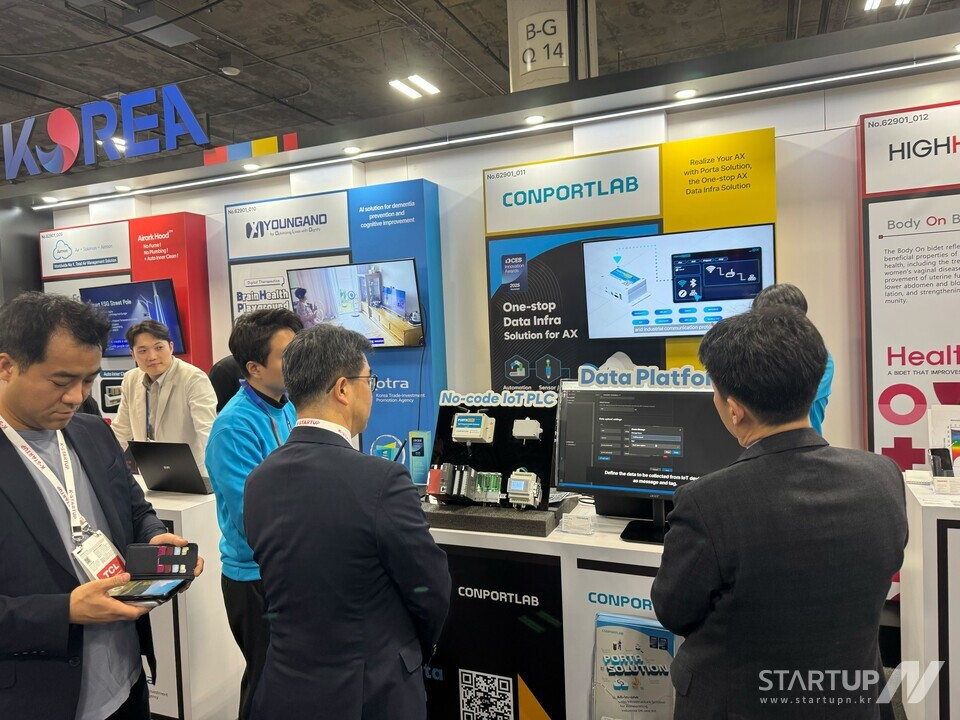

컨포트랩, 제조 AI 검색 콘텐츠 허브와 뉴스룸 개편
블로그는 검색형 인사이트로, 뉴스룸은 회사 소식과 제품 업데이트로 분리했습니다.
글 읽기뉴스룸
컨포트랩의 제품 업데이트, PORTA 적용 사례, 제조 AI 콘텐츠 발행 소식을 별도 뉴스 페이지와 상세 아티클로 정리했습니다.
블로그는 검색형 인사이트로, 뉴스룸은 회사 소식과 제품 업데이트로 분리했습니다.
글 읽기반도체 부품, 소비재, 건자재, 식품 제조 현장의 운영 개선 사례를 정리했습니다.
글 읽기설비 신호, 품질 이력, 에너지 사용량을 운영 질문 단위로 묶는 기준을 강화했습니다.
글 읽기
보도 클리핑투자 유치, CES 혁신상, 제조 AI 공모전, 인터뷰 기사를 실제 언론 링크로 정리했습니다.
클리핑 보기